부자 된다는 강의 대신
딸깍으로 만드는 숏폼
Overview
주제만 고르면 숏폼 영상이 나오는 제품
SnapShorts는 주제만 고르면 AI가 제목과 대본, 음성, 이미지를 만들어 9:16 숏폼 영상으로 합쳐 주는 제품입니다. 미국 사용자를 대상으로 기획부터 디자인, 개발, 배포까지 혼자 맡았습니다.
서비스 보기STEP 01Background
AI로 숏츠를 딸깍 만들면
누구나 부자가 된다는 교육 사기가 판치고 있었습니다
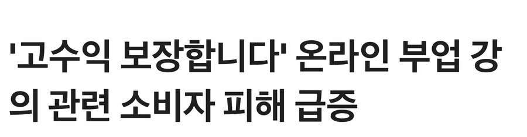
수강생 피해 보도가 이어졌습니다
한국소비자원에 접수된 온라인 부업 강의 피해구제 신청은 2024년 11건에서 2025년 42건으로 늘었습니다.
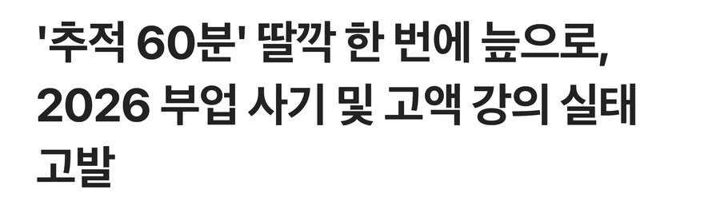
PROJECT GOAL
딸깍하면 영상이 나오는 제품을
강의보다 싼 크레딧으로 팔기로 했습니다
강의는 방법만 알려 줄 뿐 영상은 결국 직접 만들어야 해서 그 과정을 제품이 대신하게 했습니다. 같은 니즈가 미국에도 있다고 보고 미국 사용자를 대상으로 만들었습니다.
STEP 02Process
숏폼을 자동으로 뽑으려면
어떤 일을 대신해야 할지 7단계로 나눠 봤습니다
주제를 찾는 일부터 채널에 올리는 일까지 사람이 하던 일을 순서대로 적고 AI가 앞 단계 결과를 이어받아 다음 단계를 처리하도록 고민했습니다.
1주제 찾기
카테고리를 고르면 Perplexity가 미국 트렌드 뉴스를 가져옵니다.
2제목 쓰기
고른 뉴스를 바탕으로 AI가 제목 후보 세 개를 제안합니다.
3대본 쓰기
60초 대본을 Hook, Deep Dive, CTA 구조로 쓰고 장면을 10~12개로 나눕니다.
4음성 입히기
고른 목소리로 장면별 대본을 읽어 음성을 만듭니다.
5이미지와 영상 만들기
장면별 프롬프트로 9:16 이미지를 만듭니다. AI 영상을 고르지 않으면 이미지가 점점 확대되는 모션으로 대신합니다.
6자막과 음악 넣어 합치기
음성과 영상에 자막과 배경음악을 입혀 FFmpeg로 한 편으로 합칩니다.
7채널에 올리기
YouTube에 바로 올리고 TikTok, Instagram용 홍보 문구를 만듭니다.
숏폼 한 편 완성
STEP 03Model Test
비용을 줄이려고
단계마다 모델을 비교했습니다
영상 한 편을 싸게 만들 수 있어야 강의보다 저렴하게 팔 수 있습니다. 단계마다 모델을 시도해 보고 아래 조합으로 서비스에 넣었습니다.
 뉴스 수집Perplexitysonar함께 비교한 모델GPT-4o SearchGemini + Google Search
뉴스 수집Perplexitysonar함께 비교한 모델GPT-4o SearchGemini + Google Search다른 모델도 웹 검색은 했지만 sonar는 답마다 출처 링크가 기본으로 붙어 나왔습니다. 뉴스 영상은 근거가 있어야 해서 이쪽을 골랐습니다.
 제목 생성Google Gemini2.0 Flash함께 비교한 모델GPT-4o miniClaude 3.5 Haiku
제목 생성Google Gemini2.0 Flash함께 비교한 모델GPT-4o miniClaude 3.5 Haiku짧은 영어 제목은 셋 다 비슷하게 잘 썼습니다. 그중 가장 싸고 빨라서 후보를 여러 개 뽑아도 부담이 없었습니다.
 음성ElevenLabsTurbo V2.5함께 비교한 모델OpenAI TTSGoogle Cloud TTS
음성ElevenLabsTurbo V2.5함께 비교한 모델OpenAI TTSGoogle Cloud TTS내레이션 억양이 가장 사람 같았습니다. Turbo는 같은 회사의 고품질 모델보다 싸고 빨라서 영상 한 편 단가를 맞출 수 있었습니다.
 이미지Gemini 2.0 FlashNano Banana함께 비교한 모델GPT Image 1FLUX 1.1 Pro
이미지Gemini 2.0 FlashNano Banana함께 비교한 모델GPT Image 1FLUX 1.1 Pro다른 모델은 장면마다 인물과 화풍이 조금씩 달라졌습니다. 앞 장면 이미지를 참고로 넣으면 같은 인물과 화풍이 이어져 영상이 한 편처럼 보였습니다.
 영상 (선택)GoogleVeo 3함께 비교한 모델Kling 2.1Sora 2
영상 (선택)GoogleVeo 3함께 비교한 모델Kling 2.1Sora 2소리까지 함께 만들어 장면이 가장 자연스러웠습니다. 다만 장면당 15크레딧이 더 들어 기본값이 아닌 선택 항목으로 넣었습니다.
STEP 04Style Guide
믿고 맡길 수 있도록
신뢰를 주는 초록을 사용했습니다
신뢰를 주는 초록을 형광 민트로 바꿔 비싼 강의보다 가볍고 저렴한 인상을 더했습니다.
눈이 부시지 않게 민트 위 글자는 Navy로 올렸습니다.
Pretendard
| Scale | Sample | Size | Weight |
|---|---|---|---|
| Page Title | Discover Topics | 24 | Bold |
| Menu | News Video | 14 | SemiBold |
| Body | Start by choosing a category | 14 | Medium |
| Label | Step 1 of 5 | 12 | Bold |
| Caption | Fully automated pipeline | 11 | Regular |
| Overline | WORKFLOW MODE | 10 | Bold |
| Step | Titles | 9 | Medium |
Mint
#95F5D3
가볍고 저렴한 인상을 더한 민트
STEP 05Solution
SnapShorts
주제만 고르면 AI가 숏폼을 만들어 줍니다
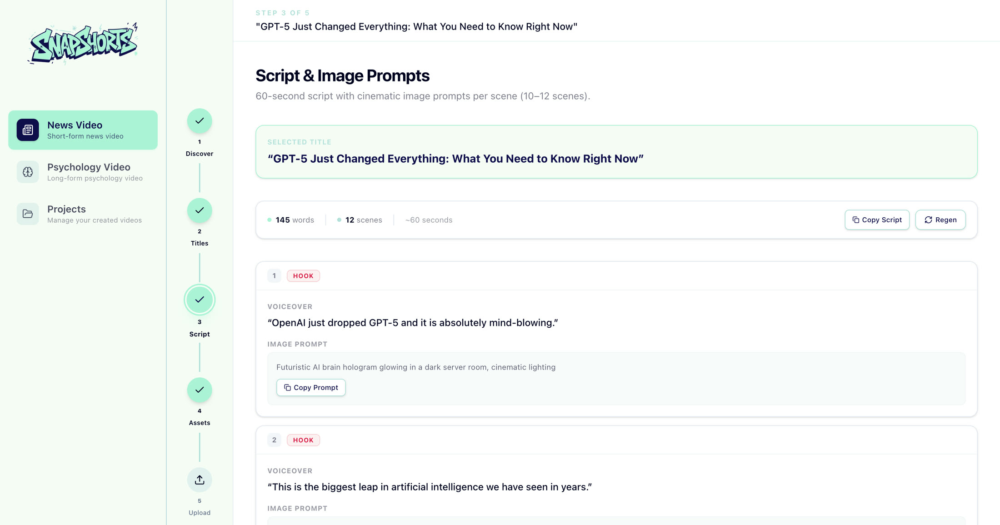
Function 1
한 번에 끝내거나
단계마다 직접 고릅니다
영상 제작을 몰라도 쓸 수 있고 결과를 다듬고 싶은 사람도 쓸 수 있게 제작 방식을 둘로 나눴습니다.
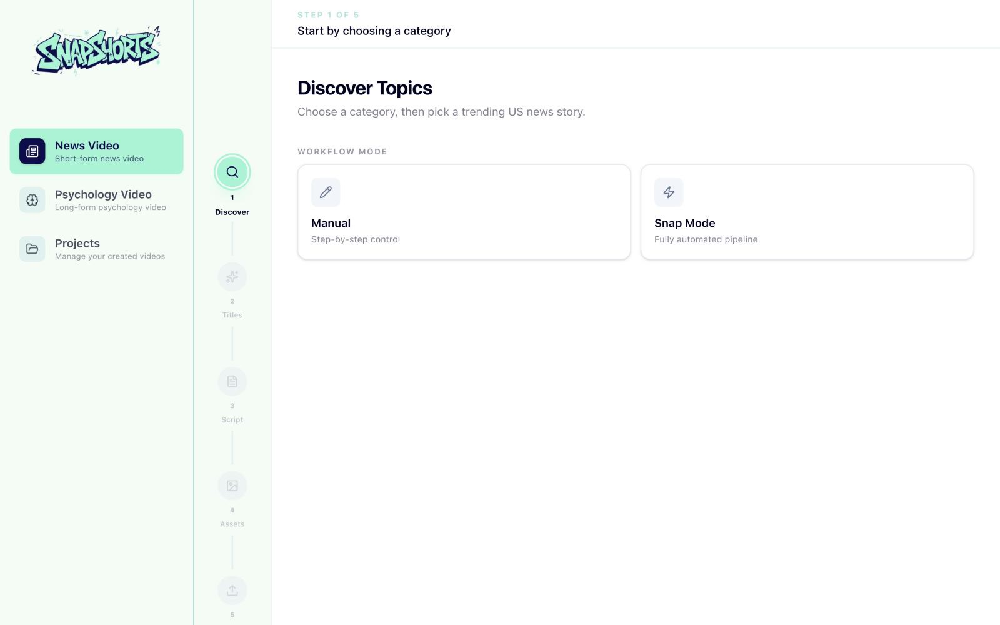
- Snap Mode
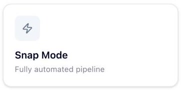
주제부터 영상까지 전체 과정을 자동으로 이어서 실행합니다.
- Manual
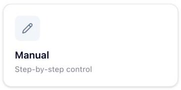
제목, 대본, 영상 소스를 단계마다 확인하고 다시 만들 수 있습니다.
Function 2
제목은 쓰지 않고
고르기만 합니다
고른 뉴스를 바탕으로 AI가 제안한 제목 중 하나를 고릅니다.
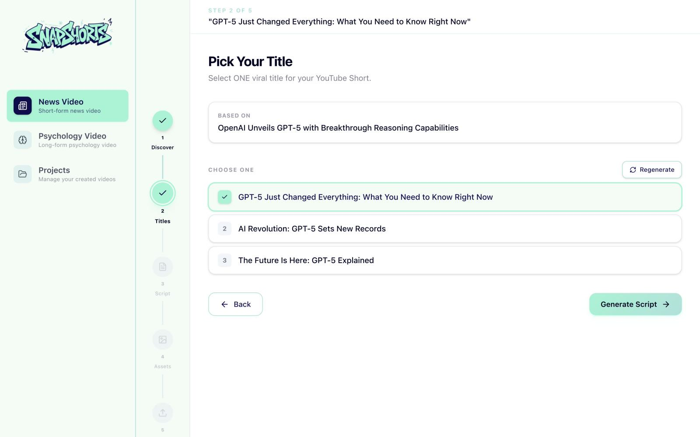
- 근거 뉴스
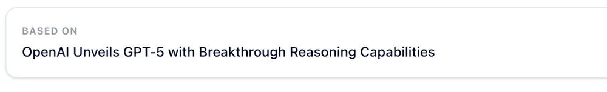
어떤 뉴스에서 나온 제목인지 함께 보여 줍니다.
- 제목 후보 세 개
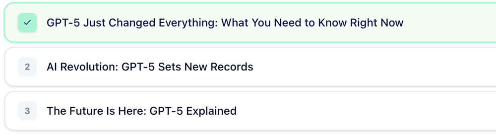
세 개 중에서 고르고 마음에 들지 않으면 다시 만듭니다.
Function 3
대본은 장면 단위로
미리 봅니다
긴 글 대신 장면으로 나누어 영상이 어떻게 흘러갈지 미리 볼 수 있습니다.
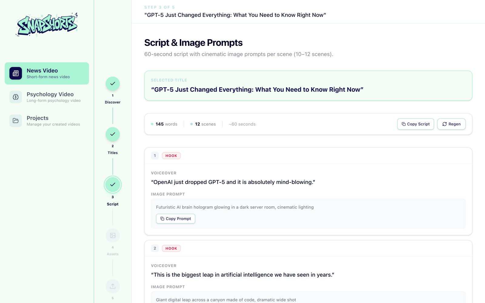
- 장면별 역할
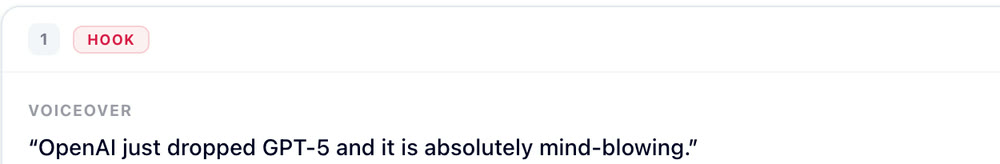
Hook과 Deep Dive로 장면의 역할을 표시합니다.
- 음성과 이미지 프롬프트
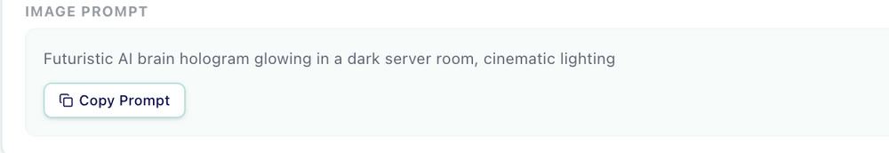
장면마다 음성 문구와 이미지 프롬프트가 짝을 이룹니다.
Function 4
화풍과 목소리만 정하면
장면마다 소스가 만들어집니다
음성, 이미지, 영상마다 12개 중 몇 개가 끝났는지 보여 줍니다.
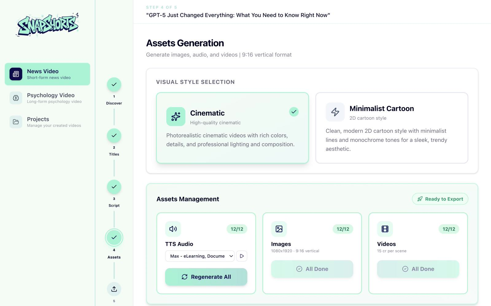
- 화풍 선택
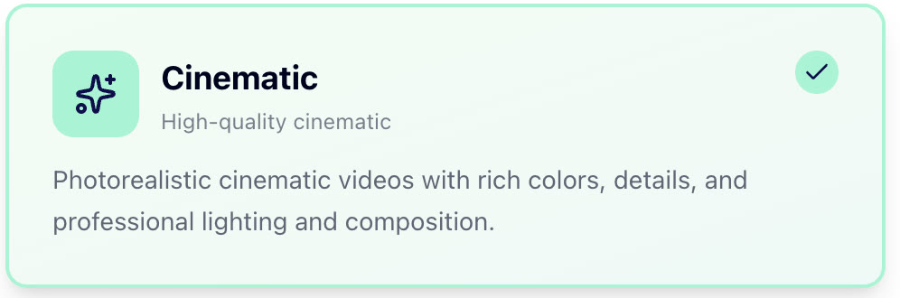
Cinematic과 Minimalist Cartoon 중에서 설명을 읽고 고릅니다.
- 목소리 선택
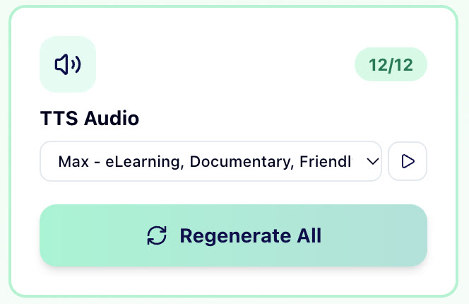
만들기 전에 목소리를 들어 보고 고릅니다.
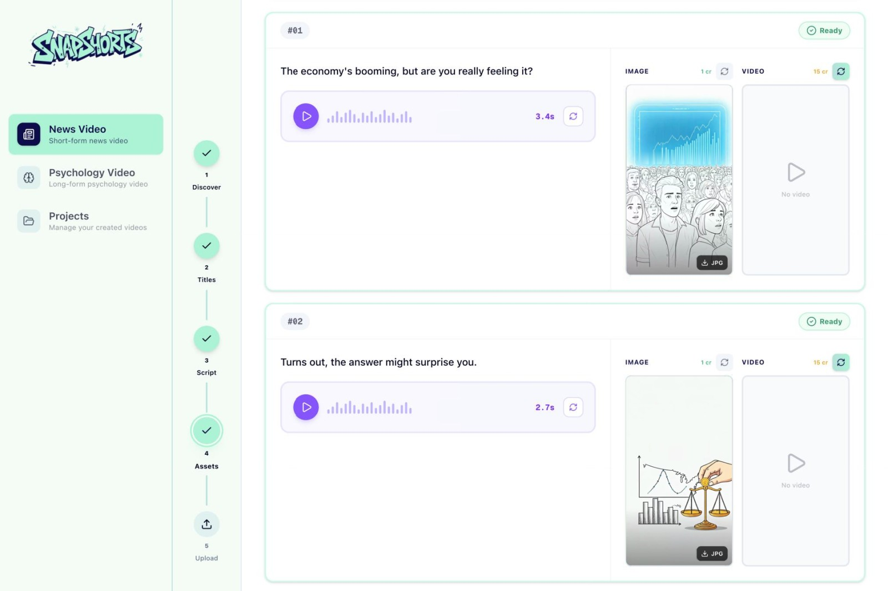
- 장면 이미지
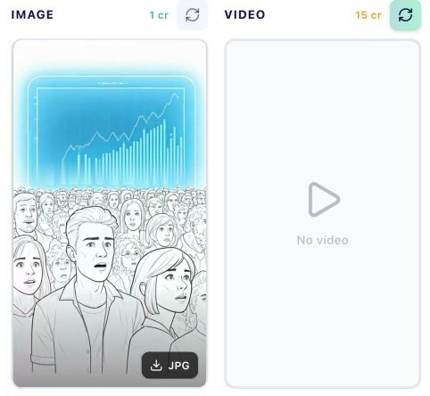
대본 한 줄마다 9:16 이미지가 한 장씩 생깁니다. 마음에 안 들면 그 장면만 다시 만듭니다.
- 영상은 선택
이미지는 1크레딧, 영상은 15크레딧입니다. 이미지만으로도 영상이 완성됩니다.
Function 5
다 되면 9:16 영상 한 편으로 합칩니다
음성과 화면에 자막과 배경음악을 입혀 MP4로 내보냅니다.
아래 영상은 모두 SnapShorts로만 만들었고 소리를 켜면 AI 음성도 들립니다.
STEP 06Reflection
혼자 끝까지 만들었지만
쓰는 사람은 아직 만나지 못했습니다
기획부터 배포까지 혼자 끝낸 만큼, 설계에서 풀린 것과 확인하지 못한 것을 나눠 정리했습니다.
EXPERIENCE
일을 나누는 것부터
배포까지 직접 해 봤습니다숏폼 제작을 7단계로 나눠 AI에게 넘기는 과정을 직접 설계하고, 기획부터 배포까지 제품 하나를 혼자 맡아 봤습니다.
USERS
사용자를 만나기 전에
먼저 만들었습니다미국 사용자를 대상으로 했지만 실제 사용자를 만나 보지 못하고 가정으로 화면을 설계했습니다. 어떤 주제를 고르고 어디서 멈추는지 확인하지 못했습니다.
LESSON
만드는 것과
쓰이게 하는 것은 달랐습니다AI 덕분에 혼자 끝까지 만들 수는 있었지만, 쓰는 사람을 찾고 계속 쓰게 하는 일은 혼자 할 수 없었습니다. 다음에는 만드는 일만큼 알리고 듣는 일도 처음부터 계획하려 합니다.
Thank you
다음 프로젝트
Bloom
한국 최대 AI 커뮤니티 Bloom의 브랜드와
웹사이트, 유튜브를 담당했습니다.